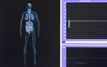
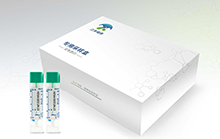

完整疗愈健康管理中心
通过生物电，生物共振，能量学，心理等方法，综合对客人进行细胞层面的保养，
尤其是线粒体ATP层面上的保养。
疾病检测
疾病检测是长期地、连续地收集、核对、分析疾病的动态分布和影响因素的资料，并将信息及时上报和反馈，以便及时采取干预措施。疾病的动态分析不仅指疾病的时间动态分布，也包括从健康到发病的动态分布和地域分布。疾病监测只是手段，其最终目的是预防和控制疾病流行。
MORE

德国云图全自动全身健康扫描检测系统
德国云图全自动全身健康扫描检测系统,采用的是低压直流电刺激感应技术。检测时，在人体的头部、手部及脚部对 称放置6个电极，向人体22个体区持续发送低压直流电信号，平均每3秒发送255次。
MORE
功能医学检测
功能医学检测是根据每一个病人独特而与众不同的体质，评估身体器官无临床症状变化的功能状况，“其评估器官的“功能” 而非仅器官的“病理”。将生物化学，生理学、免疫学、营养学、遗传学等多学科综合，把生物医学研究中的科学证据加以整 合并运用。
MORE
基因检测
基因检测可以诊断疾病，也可以用于疾病风险的预测。疾病诊断是用基因检测技术检测引起遗传性疾病的突变基因。目前应 用最广泛的基因检测是新生儿遗传性疾病的检测、遗传疾病的诊断和某些常见病的辅助诊断。
MORE

免疫法便潜血定量检测
免疫法便潜血定量检测应用的OC-全自动便潜血分析仪和便潜血检测试剂（乳胶免疫比浊法）均经国家食品药监局（CFDA） 审核批准注册，免疫法便潜血定量检测克服了传统便潜血筛查（胶体金试纸法）在卫生条件、准确性、样本保存时间等方面 的不足。不受地域限制，让每一个家庭从中收益。
MORE